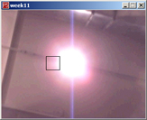
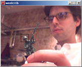

Week 11 -- Intro to Digital Image Processing ("computer vision")
back to syllabusComputer Vision
Computer vision refers to the the field of research that studies ways computers can gather and interpret visual information (usually via a digital video camera.) We're interested in how techniques employed in computer vision algorithms can be used to enhance screen (and non-screen) based interactive systems. You'll find some resources here:http://www-2.cs.cmu.edu/~cil/vision.html
http://homepages.inf.ed.ac.uk/rbf/CVonline/
http://www.cs.hmc.edu/~fleck/computer-vision-handbook/
In working with processing, you might also make use of Josh Nimoy's "WebCamXtra", a software library for Processing, Java, and Macromedia Director (Windows and Mac OS X.) WebCamXtra has simple-to-use advanced features, such as color tracking, glob detection, etc. For more information, please visit:
http://webcamxtra.sourceforge.net/
For our purpose, we will look at a two very basic examples of how to track a given color in a video image. Our methods won't be as robust or sophisticated as advance CV programs, but the underlying principle will be the name:
Tracking Brightness
This first example checks the brightness of each pixel of each frame, saving the location for the brightest pixel in a variable. It then draws a rectangle at the location of the brightest pixel.
source code
The next example employs the same method as above, however, instead of tracking the brightness of a pixel, it tracks how close any given pixel is to a certain color (the color is determined by the user clicking the mouse on a certain pixel.) To calculate the difference between two colors, we use the following formula (assume two variables of type color, color1 and color2):
float r1 = red(color1); float g1 = green(color1); float b1 = blue(color1); float r2 = red(color2); float g2 = green(color2); float b2 = blue(color2); float diff = sqrt(sq(r1 - r2) + sq(g1 - g2) + sq(b1 - b2));
source code
back to syllabus